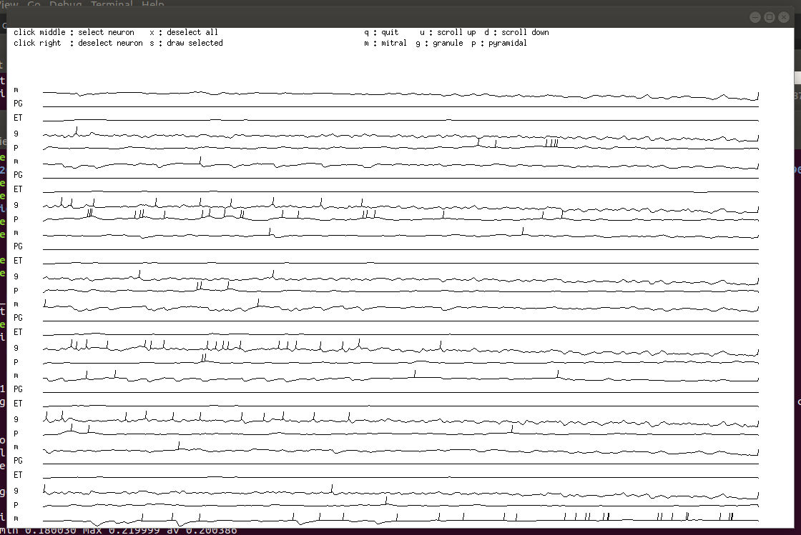

This is the readme for the model associated with the paper:
Linster C, Kelsch W (2019) A computational model of oxytocin modulation of olfactory recognition memory. eNeuro
http://dx.doi.org/10.1523/ENEURO.0201-19.2019
This C code was contributed by C Linster.
Example Use:
----------------
Build and run the executable: (X-library folders may have to be adjusted:
on ubuntu 18.04 the command "sudo apt install libxt-dev" had to be executed to supply the X-library folders):
make -f neuron.mak
./neuron.run
Select the options: 1 (set up new), 31 (odor stim), 1 (learn), 0 (don't forget)
So that your shell session might look like this:
LinsterKelsch2019$ ./neuron.run
end of init graphics
1. set up new 2. load config 3. exit
1
at end of bulb NUNITS 601 NLINKS 14476
Nunits 601 Nlinks 14476
1. draw again 31. odor stim 32. electrical 21. same input 3. save pyrs 4. set up new 5.save mits 6. save grans 7. save averages 8. correlations 9. show weights 10. save_weigts 11. save time avs 13. exit
31
in run loop
in null all N_STEPS 1000 N_UNITS 601
0 dont 1 learn
1
0 dont forget 1 forget
0
After a short delay you should see a figure like this

Program files (.c) :
sim.c functions to create neurons and synapses between neurons
set.c function to create a network of olfactory bulb sensory neurons, PG, ET, mitral and granule cells connected to a layer or cortical pyramidal cells
functions.c: a collection of functions that allow to update neurons' inputs, voltage and output at every step
update.c: functions to iterate a network over a number of sampling steps
util.c: collection of useful functions
io.c: some input and output functions, for example functions to create odor stimulation or read outputs
neuron.c: contains the main function that runs the program and displays results and lets user work with the simulations
gra.c, color.c: a collection of graphical functions
show.c , draw.c: functions to display results
fft.c: functions to calculate FFT of signals and crosscorrelations
Definition files (.init):
cell.init, draw.init, gra.init, lib.init, my.init contain definitions of global variables and functions
Parameter files (.dat):
bulb.dat: allows to choose parameters to build a network
channels.dat: parameters for synaptic interactions
draw.dat: display parameters
para.dat: simulation parameters such as number of sampling steps
Make files (.mak):
neuron.mak
Create executable called neuron.run
save.mak graph.mak